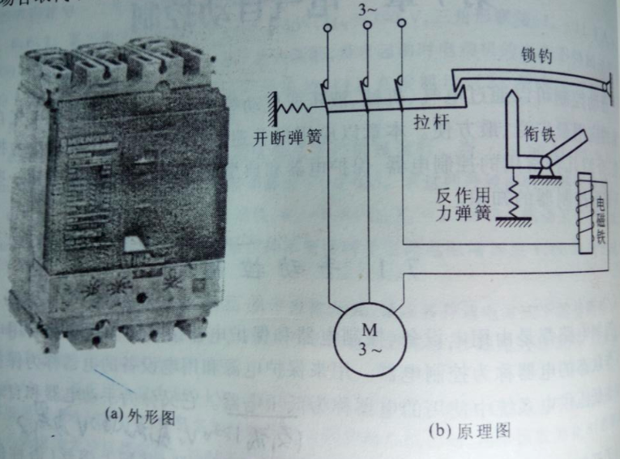
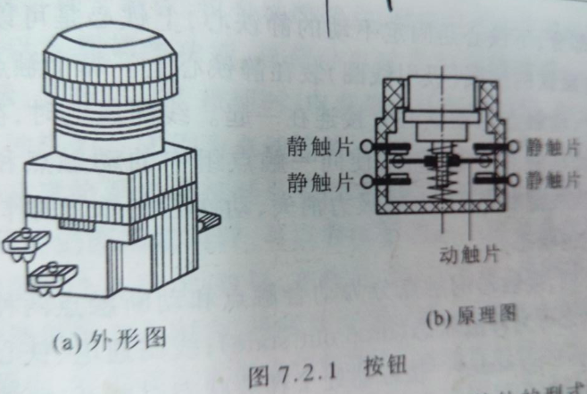

今日点点滴滴的记录
明日都将成为你最宝贵的财富
自动控制可以通过电气，机械，液压或气动等手段来实现。而其中以电气自动控制的应用最广泛，最方便。控制电路都是由用电设备，控制电器和保护电器组成的。用来控制用电设备工作状态的电器成为控制电器。用来保护电源和用电设备的电器称为保护电器在低压系统中使用的电器称为低压电器（以交流1200v，直流1500v为界）。分为手动电器和自动保护电器。
常见的手动控制电器有刀开关（Knife switch）（过去常用的手动控制电器，配上保险丝可以进行短路保护）.熔断器（fuse）(通常由熔体和外壳组成，熔体是由电阻率较高的易熔合金组成).断路器(circuit breaker)(又叫空气开关或自动开关，兼有刀开关和熔断器的作用，一般可用作电路的短路保护和过载保护)。
常见的自动控制电器有按钮（push button）
